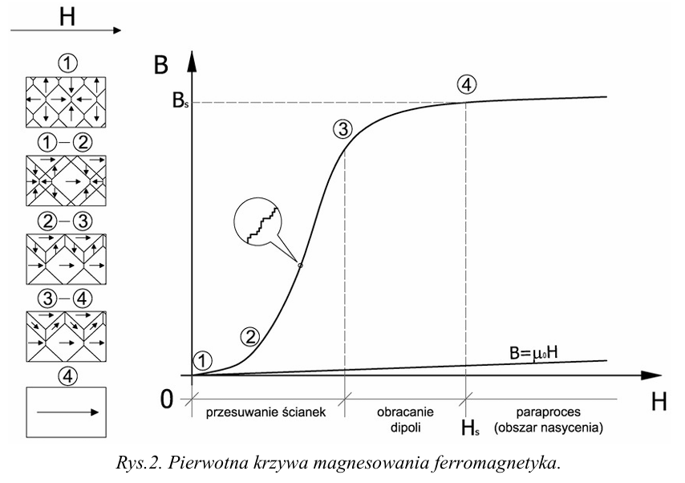

Pole magnetyczne to właściwość przestrzeni, w której na namagnesowane obiekty lub ruchome ładunki elektryczne działają siły magnetyczne. Źródłami pola magnetycznego są: Ziemia, magnesy stałe, elektromagnesy. Siła oddziaływania zależy od natężenia pola magnetycznego oraz od właściwości magnetycznych obiektów. Pole magnetyczne jest wytwarzane zawsze tam, gdzie poruszają się ładunki elektryczne.
Materiały magnetyczne dzielą się na:
Ferromagnetyk to materiał, który charakteryzuje się silnymi właściwościami magnetycznymi, związanymi z występowaniem spontanicznego namagnesowania, czyli namagnesowania po ustąpieniu zewnętrznego pola magnetycznego. W ferromagnetykach tworzą się domeny magnetyczne.
Do ferromagnetyków zalicza się między innymi:
Przenikalność magnetyczna (μ) to wielkość, która łączy indukcję i natężenie pola magnetycznego, określając właściwości magnetyczne ośrodka. Wartość przenikalności magnetycznej ferromagnetyków zależy od natężenia pola magnetycznego i temperatury.
Pierwotna krzywa magnesowania to graficzna interpretacja procesu magnesowania ferromagnetyka, przedstawiająca zależność indukcji magnetycznej (B) od natężenia pola magnetycznego (H). Krzywą tę można podzielić na trzy etapy:
Szum Barkhausena: to skokowe zmiany namagnesowania podczas przesuwania ścianek domen.
Pętla histerezy magnetycznej powstaje podczas zmniejszania natężenia pola magnetycznego po osiągnięciu nasycenia. Jest ona miarą nieodwracalności układu i stanowi "efekt pamięci" wykorzystywany w pamięciach magnetycznych.
Charakterystycznymi punktami pętli histerezy są:
Ferromagnetyki dzielimy na:
Wykres pętli histerezy magnetycznej:
Wykres pętli histerezy magnetycznej przedstawia zależność indukcji magnetycznej (B) od natężenia pola
magnetycznego (H) podczas procesu magnesowania i rozmagnesowania materiału. Kształt pętli pozwala
sklasyfikować materiały magnetyczne na magnetycznie miękkie, półtwarde i twarde.
Zastosowania ferromagnetyków:
Zapis informacji na dyskach magnetycznych polega na zmianie namagnesowania cienkiej warstwy magnetycznej na nośniku. Zmiana kierunku namagnesowania reprezentuje jedynkę binarną, a brak zmiany zero logiczne. Zmiany namagnesowania dokonuje się za pomocą głowicy z przetwornikiem elektromagnetycznym.
Proces zapisu/odczytu:
Prąd płynie przez przewody jak rzeka,
Napięcie się wznosi, opór nie zwleka.
Elektrony tańczą w obwodzie wesoło,
A pole magnetyczne wiruje wokoło.
Kondensatory ładują się dzielnie,
Cewki indukcję tworzą rzetelnie.
Diody kierują prąd tam gdzie trzeba,
Tranzystory wzmacniają sygnał do nieba!